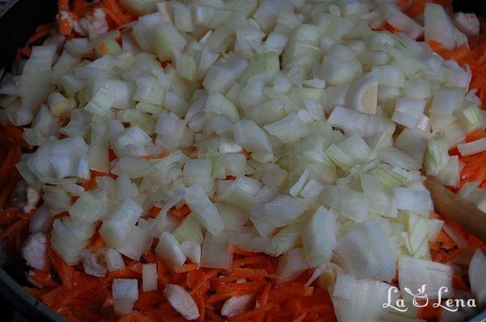

| Ingrediente | Cantitate |
|---|---|
| Varza albă | 2 buc |
| Piept de pui | 1 buc |
| Morcovi | 4 buc |
| Ceapă albă | 4 buc |
| Pastă de tomate | 100g |
| Ulei de floarea soarelui | 100ml |
| Orez | 1 pahar |
| Piper/Sare | după gust |
1) Puneti intr-o cratita mai mare apa cu sare la fiert, o umpleti pe jumate ca sa puteti pune varza acolo si sa nu va curga apa din cratita. Pana fierbe apa se pregateste varza, se spala, se curata si se scoate cotorul. Apoi cand incepe sa fiarba apa, puneti varza in cratita, o miscati cu furculita ca sa intre apa printre frunze si incepeti sa scoateti frunzele, una cate una. Veti observa ca se scot foarte usor pe parcurs ce se oparesc de la apa fiarta. Frunzele de varza oparite le puneti intr-un bol, una peste alta pe parcurs ce le scoateti din cratita. Eu prefer sa fac mai multe frunze, nu cumva sa nu-mi ajunga, iar daca raman le pun la frigider și apoi folosesc ca sa fac Varza la cuptor. Pana se racoresc frunzele pregatim umplutura.
2) Carnea se taie cubulete mici si se pune in tigaie cu ulei sa scada putin.Foarte important, carnea nu se prajeste/rumeneste, doar un pic pana se albeste si se intareste, atunci este gata. Apoi la carne se adauga morocvii dati prin razatoare si ceapa taiata cubulete mici. Amestecati bine si lasati sa scada putin si legumele. Apoi cand legumele se mai lasa (atentie nu trebuie prajite), se adauga cateva linguri de pasta de tomate, sau rosiile taiate marunt. Amestecati, mai lasati 5 min si stingeti focul.
3) La legumele pregatite adaugati orezul spalat si amestecati bine.Apoi puneti sare, piper, boia de ardei dulce, putin marar proaspat tocat si amestecati bine. Acum incepem sa facem sarmalele - frunzele de varza se taie in 2-3 bucati (daca vreti sarmalele mai mari le taiati in 2), se taie bucatile mai groase si se formeaza sarmalele.
4) Pe fundul ceaunului/cratitei in care vor fierbe sarmalele puneti o frunza de varza mai mare si incepeti sa puneti sarmalele formate, una langa alta, nu lasati mult spatiu intre ele. Eu am avut si cativa ardei congelati pentru umplut si am pus intre sarmalele cu varza sa fie mai aromate. Dupa ce puneti fiecare strat de sarmale, le stropiti cu un pic de suc de rosii si puneti cate 2-3 frunze de marar. La fel faceti si atunci cand terminati ultimul strat, doar puteti pune mai multe frunze de marar.Si acoperiti deasupra cu resturile de varza care nu le-ati folosit la sarmale, asa ca sa acopere bine toata suprafata lor. Turnati apa ca sa acopere bine sarmalele, puneti la fiert si cand dau in clocot faceti focul foarte mic si lasati asa 2 ore. Apoi stingeti focul, si mai lasatile o ora sa se patrunda - asa vor fi mult mai delicioase.